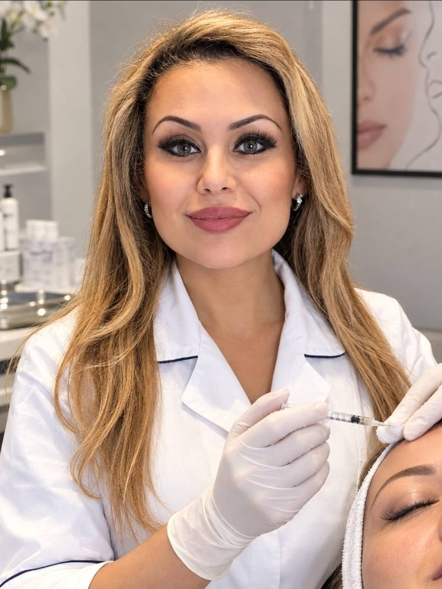

Q-Med Esthetic Products
Utbildning inom Restylane, Perlane och Restylane Touch.
ANSIKTSESTETIK I STOCKHOLM
Med omtanke om dig.
Dr. Maryam · Tandläkare och estetisk behandlare
Hos mig möts lång erfarenhet och ett personligt bemötande. Dina önskemål är utgångspunkten, med ditt eget uttryck i fokus.
Boka tid via Bokadirekt
MÄNNISKAN BAKOM BEHANDLINGEN
Mitt mål är att du ska känna igen dig själv.
Jag är tandläkare och estetisk behandlare i Stockholm, med lång erfarenhet inom ansiktsestetik och vidareutbildning inom estetiska injektionsbehandlingar.
För mig börjar en behandling med att lyssna. Vi pratar om dina önskemål och förutsättningar, så att du kan fatta ett genomtänkt beslut i lugn och ro.
ERFARENHET & VIDAREUTBILDNING
Vidareutbildning är en viktig del av mitt arbete. Här är två av mina utbildningar inom ansiktsestetik.
Utbildning inom Restylane, Perlane och Restylane Touch.
Refresher Botulinum Toxin Training Course.
Harley Street, London.
BEHANDLINGAR
En personlig bedömning hjälper oss att hitta ett upplägg som passar dig.
Se alla behandlingar & priserForm, volym och proportioner med hänsyn till ansiktets helhet.
Individuell konsultation om mimiska linjer och möjliga behandlingsalternativ.
Skinboosters och hudbehandlingar med fokus på hudens behov.
Tid för dina frågor, förväntningar och en gemensam plan.
UTVALDA RESULTAT
Före- och efterbilder från klinikens material.
Varje ansikte har sina egna förutsättningar.
Klinikens presentationsmaterial, informationsbilder och tidigare inlägg. Äldre bilder kan innehålla inaktuella priser eller adresser. Aktuella uppgifter finns på Bokadirekt. Informationsbilderna är separata från patientresultaten ovan.
Resultat varierar mellan individer. Bilderna visar enskilda exempel och är ingen garanti för ett visst resultat.
VÄLKOMMEN TILL FACESTHETICS
Ta nästa steg i din egen takt.
Välj behandling eller konsultation och hitta en tid som passar.
Aktuella priser och besöksadress finns på Bokadirekt.